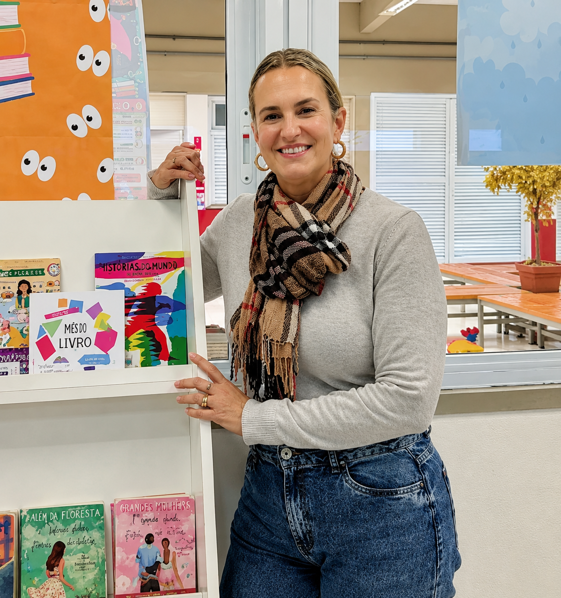

Demais Serviços

Lucimara
Com uma vocação voltada desde o inÃcio de sua carreira para a educação básica, Lucimara atua no SESI impulsionando a leitura, a pesquisa e a autonomia dos estudantes. Para ela, a biblioteca escolar é um ambiente vivo de suporte ao aprendizado, cujo maior encanto está em ver os alunos se tornarem protagonistas do próprio conhecimento. Diante do desafio constante de competir com a atração das telas e da tecnologia, ela trabalha para despertar o pensamento crÃtico por meio dos livros. Aos jovens, Lucimara deixa o convite para que aproveitem essa fase única da vida investindo em si mesmos e explorando todo o universo que a leitura oferece.
Saiba maisLayla
Há um ano e meio como mediadora educacional no SESI, Laila Vicini Rizzato atua na linha de frente do suporte sócio emocional da comunidade escolar. Com sólida formação em Pedagogia, Psicopedagogia e Neuropsicopedagogia, traz uma bagagem de 13 anos em contextos educacionais diversos, da inclusão às redes municipais e particulares. No dia a dia, Laila transforma seu setor em um espaço seguro de escuta ativa e acolhimento para além das cobranças acadêmicas. Enxergando os alunos em sua totalidade humana, a mediadora reforça que o desenvolvimento do caráter e a empatia são tão valiosos quanto o conhecimento técnico, incentivando os estudantes a darem o seu melhor todos os dias.
Saiba mais

Isabela
Realizando o sonho de atuar na educação, Isabela ingressou no SESI como estagiária em seu primeiro emprego e, em pouco tempo, foi efetivada como cuidadora escolar no Ensino Fundamental. Há mais de um ano na função, ela se dedica a construir laços de confiança e acolhimento com as crianças, atuando como um porto seguro no ambiente escolar. Inspirada pela força de sua mãe e de sua avó, valoriza as conquistas femininas no espaço de trabalho e destaca a intencionalidade e o olhar atento por trás do seu cuidado diário. Com aprendizados constantes em empatia e paciência, Isabela aconselha os estudantes a nunca desistirem de seus sonhos e a buscarem sempre se sentir amados, capazes e pertencentes.
Saiba maisKyan LuÃsa
Kyan LuÃsa atua na educação há mais de 15 anos e se dedica à inclusão escolar. A maternidade atÃpica a motivou a estudar sobre neurodiversidade e acolhimento. Ela considera a inclusão um trabalho diário, feito com empatia e dedicação. Sua maior conquista é acompanhar o desenvolvimento e a formação dos alunos. Inspirada pela famÃlia e por grandes mulheres, busca combater preconceitos na educação. Seu objetivo é deixar uma marca positiva na vida dos estudantes. Kyan aconselha os jovens a valorizarem as relações e aproveitarem cada momento.
Saiba mais